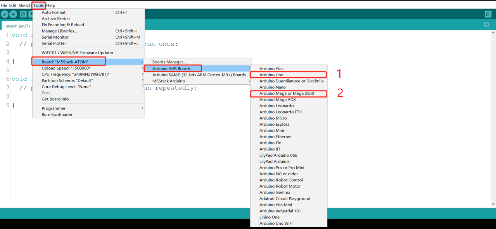
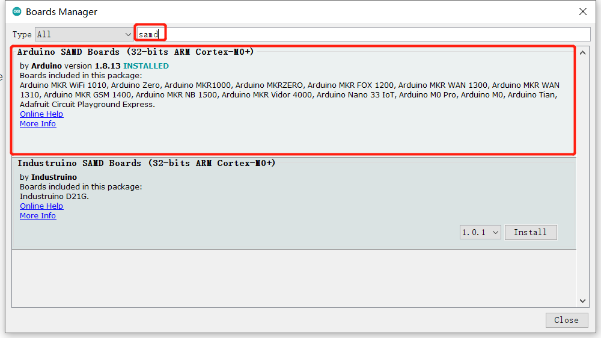
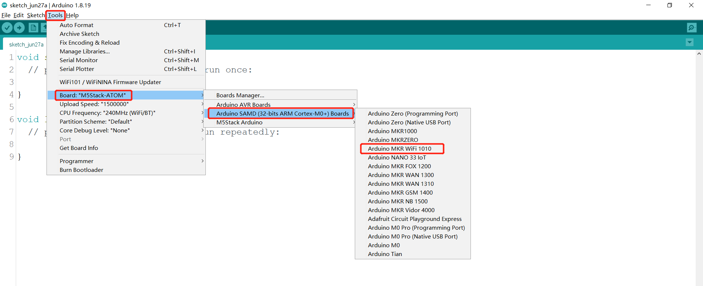

Arduino 库的使用
支持机械臂类型：myCobot280-Arduino
使用案例：比如打开C:\Users\User\Documents\Arduino\libraries\MyCobotBasic\examples\MyCobot280\MyCobot280_Arduino\Mega\AnglesControl\AnglesControl.ino，此案例需要先对开发板进行烧录，再与机械臂连接，否则会出现上传失败的情况。
使用底部basic库您可以在Arduino下自由开发，控制我们公司的机械臂。
1 编译前的修改
导入库文件，如果您的机械臂是myCobot280-Arduino，请检查开发板是否为Mega2560或者Uno，如果是：
1.1 请将MyCobotBasic\lib\avr-libstdcpp放到C:\Users\User\Documents\Arduino\libraries下:


2 编译前开发板的选择
2.1 开发板为Uno、Mega2560,工具 --> 开发板 --> Arduino AVR Boards --> Arduino Uno（或者Arduino MEAG or Mega2560)，具体可看下图：

1 When using uno,select
2 When using Mega2560, select
2.2 开发板为mkr wifi1010
开发板管理器搜索samd，如果没有安装，就安装，首先工具 --> 开发板 --> 开发板管理器，然后搜索samd，具体可看下图：


开发板选择mkr wifi1010，工具 --> 开发板 --> Arduino SAMD --> Arduino MKR WiFi1010
